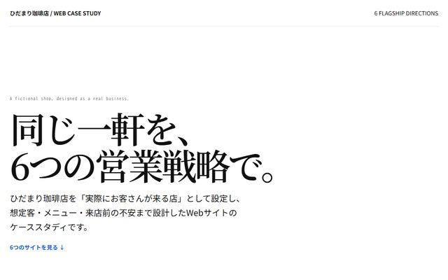
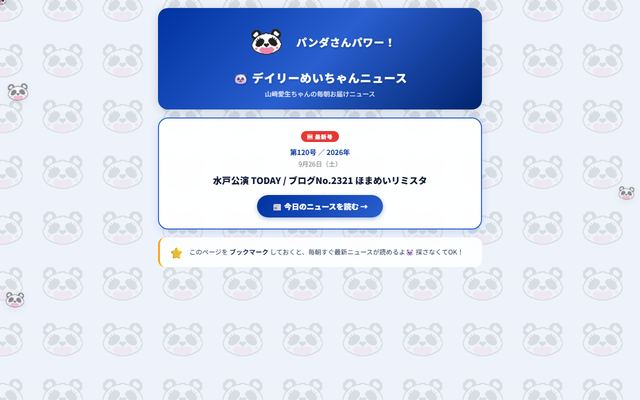
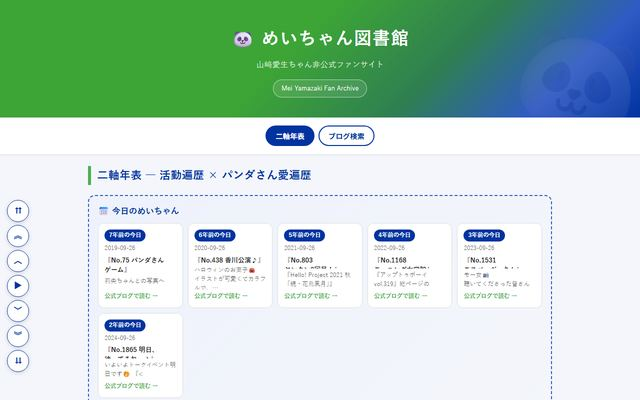
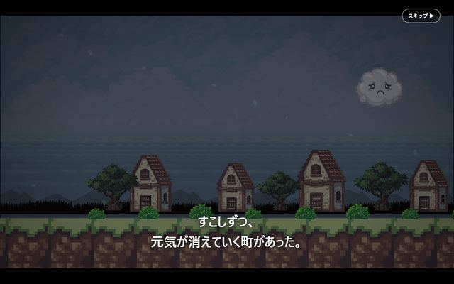
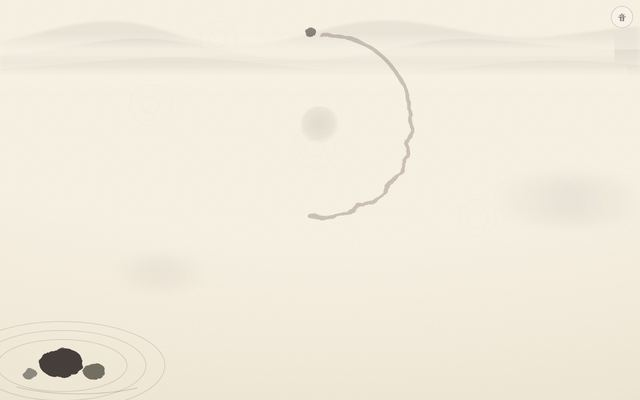
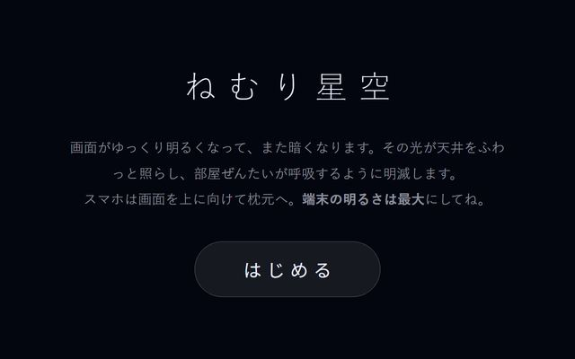
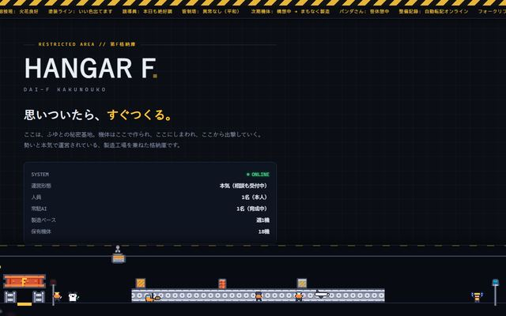

はじめの一歩プラン
30,000円（税込）
60分×3回
こんな方へ
- ほとんど使ったことがない
- ChatGPTなどを入れたが、使いこなせていない
- 何を聞けばいいか分からない
- 基本から始めたい
目指すところ
一人で相談して、返ってきた答えを直しながら、自分が欲しい結果に近づけられるようになる。
進め方
決まった教材ではなく、あなたが興味のあること・やりたいことを題材に進めます。
仕事の書類も、お店のメモも、趣味の記録も。
自分で頼めるようになるまで、
1対1でとなりにいます。
いまの使い方は、人それぞれです。
仕事・副業・お店だけでなく、趣味や個人の活動でもご利用いただけます。
持ち込めるテーマの例です。あなたの「これ、できるかな？」が、そのまま題材になります。
内容によっては対応が難しい場合もあります。まずは無料相談で、やってみたいことをお聞かせください。
あなた自身の手で、やりたいことを形にできるようになるまで、一緒に進めます。
作業を代わりに引き受けるサービスではありません。あなたの仕事・趣味・活動を持ってきてもらい、あなた自身がChatGPTなどに頼みながら進めていきます。
あなたが運転し、パンダさんワークスは助手席でナビをします。操作するのは、あなたのスマホやパソコン。こちらは「次はここを押して」「こう頼むと伝わりますよ」と、となりで道案内をします。
決まった授業を順番に教えるスクールではありません。あなたが持ってきたことを題材に進めるので、終わったあとも、そのまま自分の生活や仕事で使えます。
合いそうな方法はこちらからご提案します。どれを選ぶかは、あなたが決めてください。
はじめての方でも、準備はほとんどいりません。
どれも、ChatGPTやClaudeなどと相談しながら、自分でつくったものです。押すと、それぞれのページが開きます。







仕事では、ある職場で担当者しかできなかった作業を、1〜2時間から20〜30分にしました。自分の見積もり作業も、1件30〜40分から約8分になりました。

仕事・副業・お店・趣味・個人の活動など、やってみたいことがあればご相談いただけます。
3つのプランは、順番に受けるコースではありません。いまの状態や、やりたいことに合わせて選んでください。
一人で相談して、返ってきた答えを直しながら、自分が欲しい結果に近づけられるようになる。
決まった教材ではなく、あなたが興味のあること・やりたいことを題材に進めます。
あなたが実際にやりたいことを、できる限り完成まで一緒に進めます。
同時に、次から同じようなことを、あなた自身で進められるようになることを目指します。
操作するのは、あなたのスマホやパソコンです。パンダさんワークスは、助言・道案内・確認と、上手な頼み方のお手伝いをします。
週1回程度、1〜1.5か月ほどで4回を終えるペースが目安です。
相談したあとに、あなたが手でやっているクリック・入力・書き写し・ファイルの整理などを、
代わりにやってもらえる状態を目指します。
エージェントを使えるようにするところから、作業を自動で回すところまで。あなたの目的に必要なところまで、一緒に進めます。決まった教材はありません。
ご利用方法・キャンセルなどは
詳しい利用ルールをご覧ください。
「自分にはどのプランが合うんだろう？」
「こんなこともできる？」
「やりたいことはあるけど、何から始めればいいか分からない」
そんな段階でも相談できます。
まずは30分程度の相談で、次のようなことを確認します。
内容を聞いたうえで、いまの状況や目的に合いそうなプラン・進め方を、パンダさんワークスからご提案します。
無料相談は、実際の制作や作業を進めるための時間ではなく、「これからどう進めるのがよさそうか」を一緒に整理する時間です。
オンライン相談は30分程度を基本とします。対面も相談可能です。
無料相談・お問い合わせフォームは準備中です
お支払いは銀行振込です。カード払いなど、ほかのお支払い方法は準備中です。